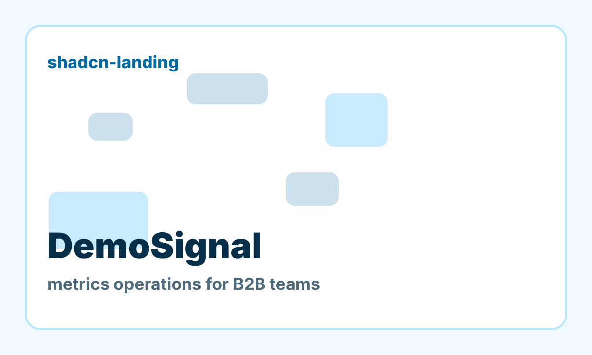

metrics · migration-timeline
metrics operations for B2B teams.
DemoSignal is an ICP-shaped source page for canonicalisation and external analytics evals. It has local assets, distinct roots, and real action targets.

solutions-hero
migration-timeline for metrics teams.
DemoSignal uses this section to create a distinct DOM root and target neighborhood for canonicalisation evals.
Download briefmigration-timeline-anchor
migration-timeline for metrics teams.
DemoSignal uses this section to create a distinct DOM root and target neighborhood for canonicalisation evals.
Download briefresults-table
DemoSignal turns scattered signals into a scored plan.
| Signal | DemoSignal | Manual path |
|---|---|---|
| Root mapping | Structured | Ad hoc |
| Action targets | Bound | Unclear |
| Evidence | Replayable | Missing |
download-cta
migration-timeline for metrics teams.
DemoSignal uses this section to create a distinct DOM root and target neighborhood for canonicalisation evals.
Download briefroi-calculator
migration-timeline for metrics teams.
DemoSignal uses this section to create a distinct DOM root and target neighborhood for canonicalisation evals.
Download briefbenchmark-bars
DemoSignal turns scattered signals into a scored plan.
| Signal | DemoSignal | Manual path |
|---|---|---|
| Root mapping | Structured | Ad hoc |
| Action targets | Bound | Unclear |
| Evidence | Replayable | Missing |
input-form
Route a buyer to the right next step.
Fields and submit controls help the canonicaliser bind action targets inside the correct root.
Conversion
Evaluate DemoSignal with stable roots and action targets.
The harness should observe this form, CTA, and surrounding component hierarchy.